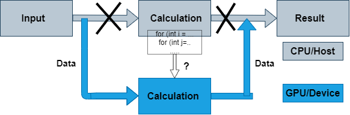

Introduction to OpenACC¶
Serial Computing on CPU

Porting to GPU

What is OpenACC ?¶
OpenACC defines a set of compiler directives that allow code regions to be offloaded from a host CPU to be computed on a GPU
High level GPU programming
Large similarity to OpenMP directives
Support for both C/C++ and Fortran bindings
Extensive guides, tutorials, code samples and documentation on the OpenACC standard can be found at www.openacc.org.
OpenACC vs. CUDA or HIP¶
How to port code to GPU with OpenACC?¶
Compilers that support OpenACC usually require an option that enables the feature
PGI (now NVIDIA HPC SDK):
-accCray:
-haccGNU (partial support):
-fopenaccWithout these options a regular CPU version is compiled!
OpenACC data model
host manages memory of the device
host copies data to/from the device
OpenACC execution model
Host-directed execution with an attached accelerator
Part of the program is usually executed by the host
Computationally intensive parts are offloaded to the accelerator that executes parallel regions
OpenACC directive syntax¶
sentinel |
construct |
clauses |
||
|---|---|---|---|---|
C/C++ |
|
|
|
|
|
|
|||
|
||||
|
||||
Fortran |
|
|
|
|
|
|
|||
|
||||
|
OpenACC uses compiler directives for defining compute regions (and data transfers) that are to be performed on a GPU
Important constructs
parallel,kernels,data,loop,update,host_data,wait
Often used clauses
if (condition),async(handle)
OpenACC data model¶
Define a region with data declared in the device memory
C/C++:
#pragma acc data [clauses]Fortran:
!$acc data [clauses]clauses can be
copy,copyin,copyout, andpresent
Data transfers take place
from the host to the device upon entry to the region
from the device to the host upon exit from the region
Functionality defined by data clauses
Data clauses can also be used in
kernelsandparallelconstructs
OpenACC execution model¶
OpenACC includes two different approaches for defining parallel regions
paralleldefines a region to be executed on an accelerator. Work sharing parallelism has to be defined manually. Good tuning prospects.kernelsdefines a region to be transferred into a series of kernels to be executed in sequence on an accelerator. Work sharing parallelism is defined automatically for the separate kernels, but tuning prospects limited.
With similar work sharing, both can perform equally well
Compute constructs: kernels¶
Define a region to be transferred to a sequence of kernels for execution on the accelerator device
C/C++:
#pragma acc kernels [clauses]Fortran:
!$acc kernels [clauses]
Each separate loop nest inside the region will be converted into a separate parallel kernel
The kernels will be executed in a sequential order
Compute constructs: parallel¶
Define a region to be executed on the accelerator device
C/C++:
#pragma acc parallel [clauses]Fortran:
!$acc parallel [clauses]
Without any work sharing constructs, the whole region is executed redundantly multiple times
- Given a sequence of loop nests, each loop nest may be executed
simultaneously
Work sharing construct: loop¶
- Define a loop to be parallelized
C/C++:
#pragma acc loop [clauses]Fortran:
!$acc loop [clauses]Must be followed by a C/C++ or Fortran loop construct.
- Combined constructs with
parallelandkernels #pragma acc kernels loop / !$acc kernels loop#pragma acc parallel loop / !$acc parallel loop
- Combined constructs with
Similar in functionality to OpenMP
for/doconstructLoop index variables are
privatevariables by default
Adding two vectors
#include <stdio.h>
#ifdef _OPENACC
#include <openacc.h>
#endif
#define NX 102400
int main(void)
{
double vecA[NX], vecB[NX], vecC[NX];
double sum;
int i;
/* Initialization of the vectors */
for (i = 0; i < NX; i++) {
vecA[i] = 1.0 / ((double) (NX - i));
vecB[i] = vecA[i] * vecA[i];
}
/* TODO:
* Implement vector addition on device with OpenACC
* vecC = vecA + vecB
*/
for (i = 0; i < NX; i++) {
vecC[i] = vecA[i] + vecB[i];
}
sum = 0.0;
/* Compute the check value */
for (i = 0; i < NX; i++) {
sum += vecC[i];
}
printf("Reduction sum: %18.16f\n", sum);
return 0;
}
#include <stdio.h>
#ifdef _OPENACC
#include <openacc.h>
#endif
#define NX 102400
int main(void)
{
double vecA[NX], vecB[NX], vecC[NX];
double sum;
int i;
/* Initialization of the vectors */
for (i = 0; i < NX; i++) {
vecA[i] = 1.0 / ((double) (NX - i));
vecB[i] = vecA[i] * vecA[i];
}
#pragma acc data copy(vecA,vecB,vecC)
{
#pragma acc parallel
{
#pragma acc loop
for (i = 0; i < NX; i++) {
vecC[i] = vecA[i] * vecB[i];
}
}
}
sum = 0.0;
/* Compute the check value */
for (i = 0; i < NX; i++) {
sum += vecC[i];
}
printf("Reduction sum: %18.16f\n", sum);
return 0;
}
#include <stdio.h>
#ifdef _OPENACC
#include <openacc.h>
#endif
#define NX 102400
int main(void)
{
double vecA[NX], vecB[NX], vecC[NX];
double sum;
int i;
/* Initialization of the vectors */
for (i = 0; i < NX; i++) {
vecA[i] = 1.0 / ((double) (NX - i));
vecB[i] = vecA[i] * vecA[i];
}
#pragma acc data copy(vecA,vecB,vecC)
{
#pragma acc kernels
for (i = 0; i < NX; i++) {
vecC[i] = vecA[i] + vecB[i];
}
}
sum = 0.0;
/* Compute the check value */
for (i = 0; i < NX; i++) {
sum += vecC[i];
}
printf("Reduction sum: %18.16f\n", sum);
return 0;
}
Compiler diagnostics¶
Compiler diagnostics is usually the first thing to check when starting the OpenACC work
It can tell you what operations were actually performed
Data copies that were made
If and how the loops were parallelized
The diagnostics is very compiler dependent
Compiler flags
Level and formatting of information
Diagnostics is controlled by compiler flag
-Minfo=optionUseful options:
accel– operations related to the acceleratorall– print all compiler outputintensity– print loop computational intensity info
Example: -Minfo¶
$ pgcc -g -O3 -acc -Minfo=acc sum_parallel.c -o sum
main:
21, Generating copy(vecA[:],vecB[:],vecC[:]) [if not already present]
23, Generating Tesla code
25, #pragma acc loop gang, vector(128) /* blockIdx.x threadIdx.x */
$ pgcc -g -O3 -acc -Minfo=accel sum_kernels.c -o sum
main:
21, Generating copy(vecA[:],vecB[:],vecC[:]) [if not already present]
23, Loop is parallelizable
Generating Tesla code
23, #pragma acc loop gang, vector(128) /* blockIdx.x threadIdx.x */
Example: PGI_ACC_TIME=1¶
$ cat slurm-13186502.out #output of sum_parallel.c
Accelerator Kernel Timing data
main NVIDIA devicenum=0
time(us): 451
21: data region reached 2 times
21: data copyin transfers: 3
device time(us): total=245 max=100 min=71 avg=81
29: data copyout transfers: 3
device time(us): total=206 max=72 min=67 avg=68
23: compute region reached 1 time
23: kernel launched 1 time
grid: [800] block: [128]
elapsed time(us): total=41 max=41 min=41 avg=41
Reduction sum: 1.2020569031119108
$ cat slurm-13186514.out
Accelerator Kernel Timing data
main NVIDIA devicenum=0
time(us): 453
21: data region reached 2 times
21: data copyin transfers: 3
device time(us): total=247 max=100 min=72 avg=82
26: data copyout transfers: 3
device time(us): total=206 max=73 min=66 avg=68
23: compute region reached 1 time
23: kernel launched 1 time
grid: [800] block: [128]
elapsed time(us): total=40 max=40 min=40 avg=40
Reduction sum: 1.2020569031119108
Hello World, vector sum and double loop
Now it’s your turn to port a few simple codes to GPUs using OpenACC directives! You will first need to download the exercises:
If you are using a cluster, follow the instructions under “Downloading exercises” in the Setup.
If you are using Google Colab, the commands to clone and explore the code repository are already in the template Colab notebook.
Instructions for using the Tetralith cluster or the Google Colab cloud can be found in the Setup section.
Remember to ask plenty of questions to the workshop helper or in hackMD!
The exercises can be found under OpenACC-CUDA-beginners/examples/OpenACC in subfolders
hello-world, vector-sum and doubleloop. Solutions can be found under the solutions
subfolders.
As usual, we start with Hello World. Inspect either
hello.corhello.F90. Compile it by running the compilation script:./compile.sh. On Tetralith, run the code using the job script,sbatch job.sh, and investigate the output. On Colab, execute the code directly by./hello.The vector sum code is slightly trickier, but you already saw how to use the
parallelandkernelsdirectives in the code block above! You should nonetheless inspect the code under subdirectoriesc/orF90/and think about where theparallelorkernelsdirectives should go and why. Try implementing it yourself and compile using the compile scriptcompile.sh(on Tetralith) or the Makefile bymake(on Colab). Run it withsbatch job.sh(on Tetralith) or./sum(on Colab).Now try the double-loop exercise. Inspect the code under
c/orF90/and try to implement OpenACC directives. Compile it by./compile.sh(Tetralith) ormake(Colab) and run bysbatch job.sh(Tetralith) or./doubleloop(Colab).
Keypoints
OpenACC is an directive-based extension to C/Fortran programming languages for accelerators
Compute constructs: data, parallel and kernels
Compiler diagnostics